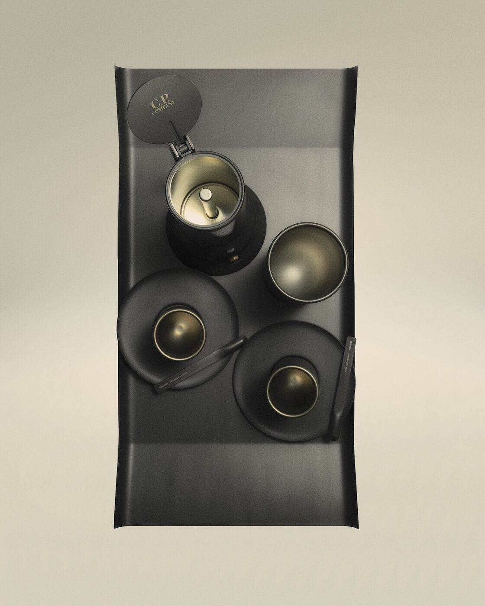

There is a particular kind of Italian genius that lives not in galleries or ateliers but on factory floors — in the hands of people who understand that a coffee maker can be as considered as a cathedral, and that a jacket lining deserves the same devotion as a fresco. At CP Company’s Milan headquarters this week, that genius has been given a name: “Blend: The Kinetic Pulse of Italian Industrial Mastery.”
The collaboration between CP Company and Alessi, staged as an installation running 21–25 April during Milan Design Week 2026, is one of those rare crossover projects that feels neither forced nor merely decorative. It works because the two houses share something deeper than aesthetics — they share a conviction that industrial production, when pursued with obsessive attention, becomes its own form of art. Both emerged from the same post-war Italian landscape of workshops and fabricators, of engineers who thought like poets and designers who thought like engineers.
The centrepiece of the collaboration is a capsule of Nylon B overshirts, CP Company’s signature fabric rendered in three colours that immediately signal the project’s intent. Total Eclipse blue, Malachite Green and Deep Lavender are not arbitrary palette choices — they are drawn directly from the work uniforms that Officina Alessi adopted in 1983, when Alessandro Mendini led the company’s landmark rebrand. The uniforms worn by Alessi’s craftspeople as they cast, polish and assemble the company’s objects have become, in CP Company’s hands, the starting point for garments designed to be worn in the world beyond the factory. It is a move that honours labour rather than erasing it.
Objects in black
Alongside the overshirts, the collaboration presents a suite of Alessi archive objects reimagined through a single transformative process: black PVD coating. Physical Vapour Deposition — a technique borrowed from watchmaking and aerospace — involves manually sandblasting each object before applying a thin, dark film in a vacuum chamber. The result is a surface that is matte, textured and alive in a way that factory-fresh stainless steel is not. It evolves with handling. It records use. It ages.
The objects selected for the treatment read like a syllabus in Italian industrial design. Richard Sapper’s 9090 espresso maker, designed in 1979, was the first coffee maker to enter the permanent collection of the Museum of Modern Art in New York — a piece so resolved in its engineering and form that it has remained in continuous production for nearly five decades. Jean Nouvel’s cups with saucers and coffee spoon, from 2005, brought the French architect’s precision to the morning ritual, treating the act of drinking espresso as an architectural event. And Enzo Mari’s Arran tray, first produced in 1961, represents the Milanese master’s belief that good design should be democratic, functional, and emotionally resonant.
To see these three objects together, stripped of their familiar silver gleam and dressed instead in the sombre authority of black PVD, is to see them afresh. The coating does not obscure the design; it clarifies it. Without reflections to distract, the forms become sculptural. The 9090’s faceted body looks almost brutalist. Nouvel’s cups acquire the gravity of ceremonial vessels. Mari’s tray, already austere, becomes monolithic.
The ritual of Italian coffee is itself a form of industrial craft — precise, repetitive, perfected over generations, and utterly resistant to improvement.
The Splendid EditThe installation at CP Company’s headquarters stages the encounter between garment and object with a restraint that lets the work speak. Overshirts hang alongside the coffee pieces in a space that evokes neither showroom nor museum but something closer to an archive — the shared memory of two companies that have spent decades refining their respective crafts. The limited-edition set, comprising all three PVD-coated objects alongside the Nylon B overshirt, is available exclusively at the CP Company showroom during the run of the installation.

Richard Sapper’s 9090, Jean Nouvel’s cups, Enzo Mari’s Arran tray — all in black PVD. Photography courtesy of CP Company / Alessi
Fashion at the drafting table
The CP Company × Alessi project arrives in a year when fashion brands are colonising Milan Design Week with increasing ambition. Where once a luxury house might have staged a cocktail party in a rented palazzo and called it a “design moment,” the current generation of crossover projects demands substance. Stone Island’s material experiments, Bottega Veneta’s collaborations with contemporary artists, Fendi’s long-standing relationship with Design Miami — these are no longer peripheral gestures. They are central to how these brands define themselves.
What distinguishes “Blend” from the more theatrical presentations elsewhere in the city is its modesty of scale and clarity of argument. CP Company, founded by Massimo Osti in 1971, has always been a brand that privileges process over spectacle — its reputation built on fabric innovation, garment dyeing and a near-scientific approach to textile development. Alessi, similarly, has never been interested in mere decoration; Alberto Alessi’s curatorial approach to commissioning designers treats each kitchen object as a proposition about how we might live. The collaboration does not stretch either brand beyond its natural territory. It simply reveals the ground they have always shared.
There is something quietly radical about presenting a coffee maker as a fashion object, or an overshirt as a design statement. It insists that the boundaries we draw between disciplines — fashion here, product design there, craft somewhere else entirely — are administrative conveniences rather than meaningful distinctions. The best Italian manufacturers have always known this. The man who dyes a Nylon B jacket in a vat in Ravarino and the woman who sandblasts a coffee maker in Crusinallo are engaged in the same pursuit: the perfection of industrial process in the service of daily life.
“Blend” closes today, on the final day of its five-day run, but its argument will outlast the installation. In a design week that often rewards scale and spectacle, CP Company and Alessi have offered something rarer — a collaboration that is genuinely about craft, heritage and the quiet conviction that the objects we use every morning deserve to be made with the same care as the clothes we put on to face the world.